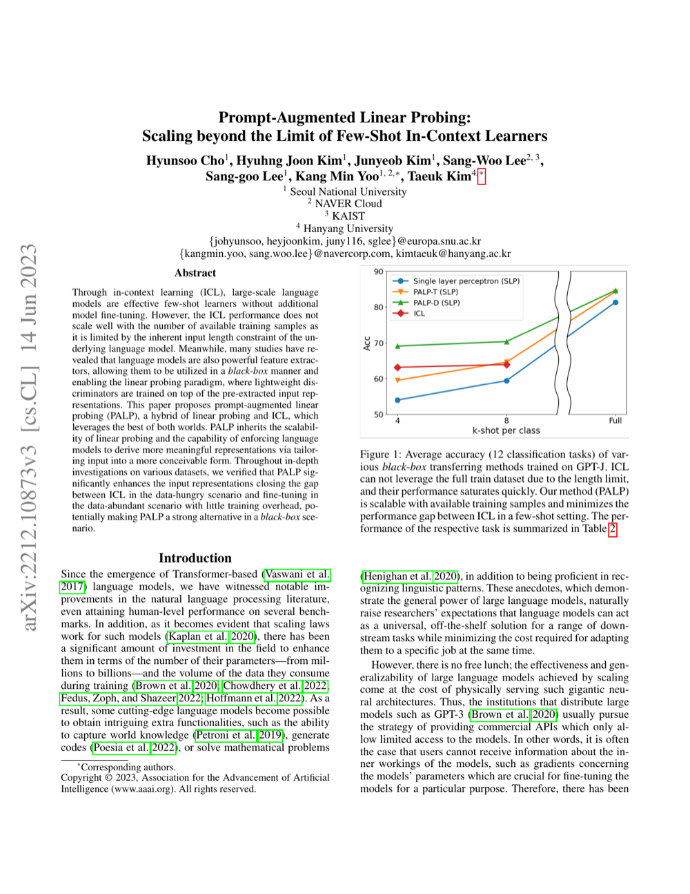

Prompt-Augmented Linear Probing: Scaling Beyond The Limit of Few-shot In-Context Learners
AAAI 2023
Hyunsoo Cho, Hyuhng Joon Kim, Junyeob Kim, Sang-Woo Lee, Sang-goo Lee, Kang Min Yoo, Taeuk Kim
One-Line Summary
Enhancing linear probing performance by leveraging prompts

Figure 1. Prompt-augmented linear probing framework that scales beyond the limits of few-shot in-context learners by combining prompt engineering with efficient probing methods.
Key Points
Combines prompts with the linear probing process to more effectively leverage the representational power of pre-trained models
Demonstrates that even a simple linear classifier can achieve high performance through prompt augmentation